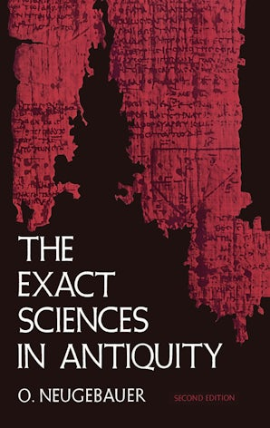
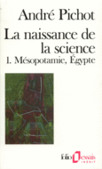
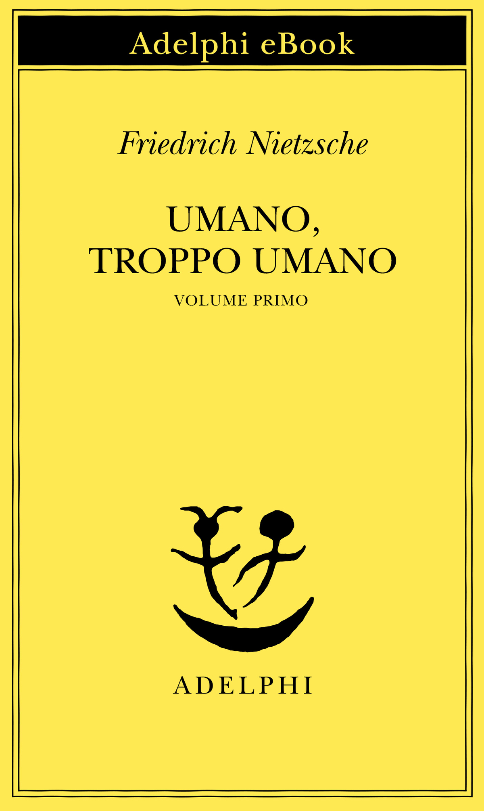

33:53 · 9 OPERE
Terrapiattisti e modernità, un connubio strabiliante.
Il filo del discorso
Il video nasce come introduzione al metodo con cui Eratostene misurò la Terra, ma diventa una riflessione sulla diffusione delle credenze terrapiattiste. Dr Divago presenta lo studioso di Cirene, ne ricorda la varietà di interessi e il rapporto intellettuale con Archimede, quindi colloca la scienza ellenistica nel confronto con le conoscenze babilonesi ed egiziane. Neugebauer e Pichot sono suggeriti come letture per ricostruire questo contesto.
Leggi la sintesi completaRiduci la sintesi
Da qui il discorso si sposta sulla distanza fra percezione immediata, desiderio e ragionamento: vedere un terreno localmente piano non basta a determinare la forma del pianeta. Il relatore interpreta il terrapiattismo come esempio di una volontà che pretende di imporre la propria immagine al reale e lo accosta a dinamiche settarie, ideologia e ricerca di appartenenza. Queste spiegazioni sociologiche e psicologiche restano sue ipotesi, senza diagnosi dei singoli aderenti o attribuzioni indiscriminate a intere confessioni. L’aneddoto di Cremonini e del telescopio e il confronto con i grandi libri sostengono l’invito ad accettare la verifica e a riconoscere i limiti personali. Verso la fine Dr Divago annuncia che dedicherà un altro video all’esperimento di Eratostene: qui non esegue il calcolo promesso. La conclusione insiste sul compito educativo della cultura e sul danno che egli attribuisce alla sostituzione del metodo con l’autoaffermazione.
I libri nel discorso

Il metodo dei teoremi meccanici
Note sul riferimento
Copertina della raccolta The Works of Archimedes: COPERTINA DELLA RACCOLTA The Works of Archimedes, a cura di T. L. Heath, Dover 2002, ISBN 9780486420844. Ristampa dell’edizione 1897 con il supplemento 1912: L’Arenario appartiene al volume principale, Il metodo al supplemento. La copertina blu con ritratto e costruzioni geometriche non è un’edizione autonoma del singolo trattato. L’inclusione del supplemento è dichiarata dall’editore; NYU ne identifica il contenuto.
Copertina della raccolta che contiene il testo. Volume 1897 più supplemento 1912; non è una copertina autonoma.
Trattato sul metodo indirizzato a Eratostene e riscoperto nel 1906: identificazione esplicita del contenuto e della storia del testo.
L’Arenario
Note sul riferimento
Copertina della raccolta The Works of Archimedes: COPERTINA DELLA RACCOLTA The Works of Archimedes, a cura di T. L. Heath, Dover 2002, ISBN 9780486420844. Ristampa dell’edizione 1897 con il supplemento 1912: L’Arenario appartiene al volume principale, Il metodo al supplemento. La copertina blu con ritratto e costruzioni geometriche non è un’edizione autonoma del singolo trattato. L’inclusione del supplemento è dichiarata dall’editore; NYU ne identifica il contenuto.
Copertina della raccolta che contiene il testo. Volume 1897 più supplemento 1912; non è una copertina autonoma.
Titolo L’Arenario esplicito; il racconto dei granelli di sabbia ne riassume liberamente lo scopo.

The Exact Sciences in Antiquity
Note sul riferimento
Copertina: Dover, 1969, ristampa integrale con lievi correzioni della seconda edizione Brown University Press 1957, XVI e 240 pagine, ISBN 9780486223322. Copertina nera con frammenti di testo in rosso, titolo bianco e indicazione Second Edition. Prima edizione 1951; non è accertata l’edizione posseduta dal relatore.
Immagine autentica dell’opera, controllata visivamente; l’edizione di riferimento non è attribuita al filmato.
Otto Neugebauer e titolo inglese espliciti, malgrado la deformazione fonetica della trascrizione automatica.

La naissance de la science
Note sul riferimento
Copertina del primo tomo: Gallimard, Folio essais 154 e 155, 1991, due tomi: I Mésopotamie–Égypte, ISBN 9782070326037; II Grèce présocratique, ISBN 9782070326044. L’immagine raffigura il solo tomo I. L’immagine non è attribuita all’esemplare del video.
Copertina ufficiale del tomo I, Mésopotamie–Égypte. Il repertorio comprende l’opera in due volumi; non confondere l’immagine con il tomo II.
André Pichot, titolo francese, Folio e due volumi espliciti.

Bibbia
Note sul riferimento
Copertina: San Paolo, 2014 · Nuova Versione dai Testi Antichi · edizione di riferimento
Testo biblico richiamato nella descrizione delle credenze di alcuni terrapiattisti; nessun passo o edizione precisi.

Umano, troppo umano
Identificazione probabile
Note sul riferimento
Copertina del primo volume digitale: COPERTINA DEL PRIMO VOLUME DIGITALE, Adelphi eBook 2016, traduzione di Sossio Giametta, XVI e 329 pagine nell’edizione di riferimento, ISBN 9788845977770. Fondo giallo con dicitura Adelphi eBook e Volume primo. Non è la copertina del secondo volume né dell’edizione cartacea. L’opera originaria del primo volume uscì nel 1878; il richiamo del video non consente di determinare un tomo o un’edizione.
Immagine editoriale dell’ebook del volume I, non edizione attribuita al video. Il richiamo al titolo è probabile e non identifica una citazione testuale.
Titolo Umano, troppo umano riconoscibile; il nome di Nietzsche è deformato e non è letto un aforisma.

Sulla stupidità
Identificazione probabile
Note sul riferimento
Copertina: La Vita Felice, 2013
Musil richiamato nella discussione della stupidità: probabile rinvio al saggio, titolo non pronunciato.
Il disagio della civiltà
Note sul riferimento
Copertina: Einaudi, 2010
Freud e Il disagio della civiltà espliciti.

1984
Note sul riferimento
Copertina: Newton Compton · edizione illustrativa
Titolo 1984 esplicito nella riflessione sulla trasformazione del reale.